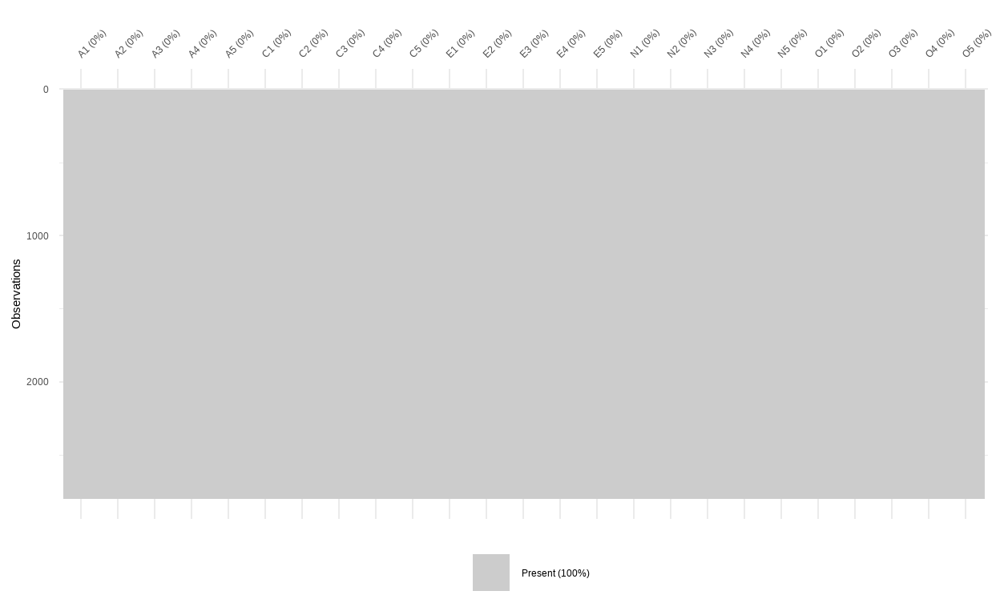
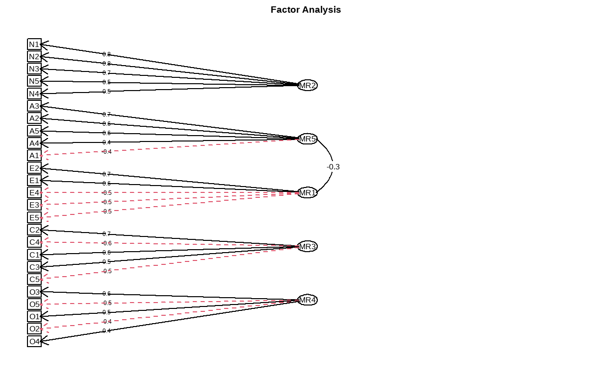
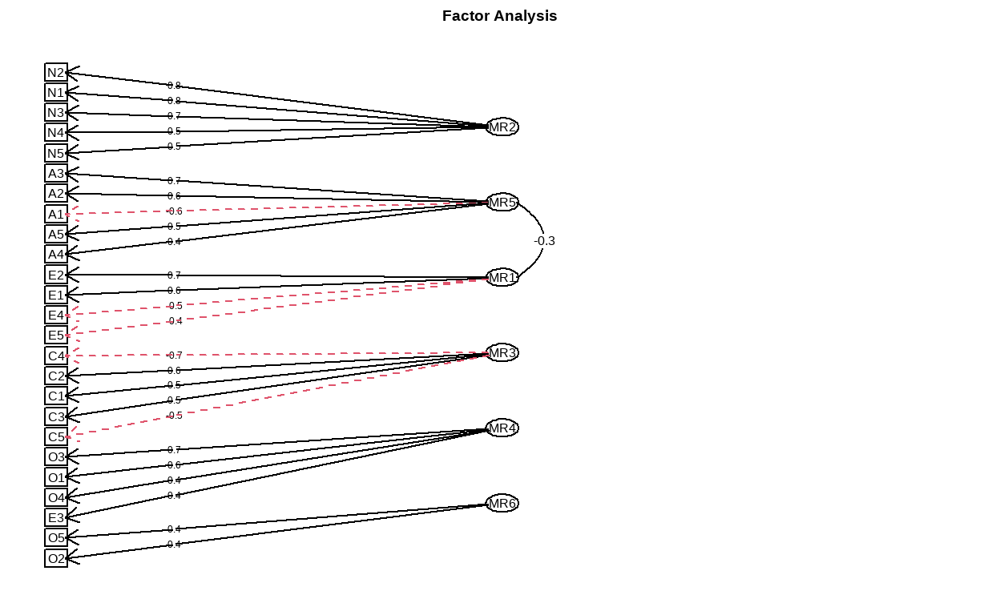

Introduction
The concept of Big 5 personality traits represents tendency of individuals to possess five personality characteristics of extraversion, agreeableness, openness, conscientiousness, and neuroticism (Neal et al., 2012).
Here, we will examine the data set with Exploratory Data Analysis (EFA) to see if we can identify any other structures aside from the original five groups as indicated by the concept of big 5 personality traits; then, we will verify those structures with Confirmatory Factor Analysis (CFA) to assess and compare their statistical characteristic (i.e., model fit).
We will begin by loading essential packages for data preprocessing and statistical modeling as indicated below.
Show code
library(parameters) #for parameter processing
library(tidyverse) #toolbox for R
library(psych) #for descriptive statistics and the data set
library(ggcorrplot) #for correlation matrix
library(see) #add-on for ggplot2
library(lavaan) #for SEM
library(performance) #assessment of Regression Models Performance
library(semPlot) #to plot path model for CFA
library(dlookr) #missing data diagnosis
library(mice) #missing data imputation
Dataset
The data set we use is a built-in data set from
psychpackage, which was collected in the United States as a part of the Synthetic Aperture Personality Assessment (SAPA) project (Revelle et al., 2010). There are 2800 observations and 25 variables of all 5 personality traits.We will begin by loading in the data set and check for its missing value.
A1 A2 A3 A4 A5 C1 C2 C3 C4 C5 E1 E2 E3 E4 E5 N1 N2 N3 N4 N5 O1
61617 2 4 3 4 4 2 3 3 4 4 3 3 3 4 4 3 4 2 2 3 3
61618 2 4 5 2 5 5 4 4 3 4 1 1 6 4 3 3 3 3 5 5 4
61620 5 4 5 4 4 4 5 4 2 5 2 4 4 4 5 4 5 4 2 3 4
61621 4 4 6 5 5 4 4 3 5 5 5 3 4 4 4 2 5 2 4 1 3
61622 2 3 3 4 5 4 4 5 3 2 2 2 5 4 5 2 3 4 4 3 3
61623 6 6 5 6 5 6 6 6 1 3 2 1 6 5 6 3 5 2 2 3 4
O2 O3 O4 O5
61617 6 3 4 3
61618 2 4 3 3
61620 2 5 5 2
61621 3 4 3 5
61622 3 4 3 3
61623 3 5 6 1Show code
#diagnose for missing value
dlookr::diagnose(data)
# A tibble: 25 x 6
variables types missing_count missing_percent unique_count
<chr> <chr> <int> <dbl> <int>
1 A1 integer 16 0.571 7
2 A2 integer 27 0.964 7
3 A3 integer 26 0.929 7
4 A4 integer 19 0.679 7
5 A5 integer 16 0.571 7
6 C1 integer 21 0.75 7
7 C2 integer 24 0.857 7
8 C3 integer 20 0.714 7
9 C4 integer 26 0.929 7
10 C5 integer 16 0.571 7
# ... with 15 more rows, and 1 more variable: unique_rate <dbl>Show code
visdat::vis_miss(data, sort_miss = FALSE)

- There are some degree of missingness in the dataset as indicated by the missingness map. For good measure, we will impute it with the predictive mean matchmaking method by the
micepackage.
Data preprocessing
Show code
#imputation
mice_model <- mice(data, method='pmm', seed = 123)
iter imp variable
1 1 A1 A2 A3 A4 A5 C1 C2 C3 C4 C5 E1 E2 E3 E4 E5 N1 N2 N3 N4 N5 O1 O3 O4 O5
1 2 A1 A2 A3 A4 A5 C1 C2 C3 C4 C5 E1 E2 E3 E4 E5 N1 N2 N3 N4 N5 O1 O3 O4 O5
1 3 A1 A2 A3 A4 A5 C1 C2 C3 C4 C5 E1 E2 E3 E4 E5 N1 N2 N3 N4 N5 O1 O3 O4 O5
1 4 A1 A2 A3 A4 A5 C1 C2 C3 C4 C5 E1 E2 E3 E4 E5 N1 N2 N3 N4 N5 O1 O3 O4 O5
1 5 A1 A2 A3 A4 A5 C1 C2 C3 C4 C5 E1 E2 E3 E4 E5 N1 N2 N3 N4 N5 O1 O3 O4 O5
2 1 A1 A2 A3 A4 A5 C1 C2 C3 C4 C5 E1 E2 E3 E4 E5 N1 N2 N3 N4 N5 O1 O3 O4 O5
2 2 A1 A2 A3 A4 A5 C1 C2 C3 C4 C5 E1 E2 E3 E4 E5 N1 N2 N3 N4 N5 O1 O3 O4 O5
2 3 A1 A2 A3 A4 A5 C1 C2 C3 C4 C5 E1 E2 E3 E4 E5 N1 N2 N3 N4 N5 O1 O3 O4 O5
2 4 A1 A2 A3 A4 A5 C1 C2 C3 C4 C5 E1 E2 E3 E4 E5 N1 N2 N3 N4 N5 O1 O3 O4 O5
2 5 A1 A2 A3 A4 A5 C1 C2 C3 C4 C5 E1 E2 E3 E4 E5 N1 N2 N3 N4 N5 O1 O3 O4 O5
3 1 A1 A2 A3 A4 A5 C1 C2 C3 C4 C5 E1 E2 E3 E4 E5 N1 N2 N3 N4 N5 O1 O3 O4 O5
3 2 A1 A2 A3 A4 A5 C1 C2 C3 C4 C5 E1 E2 E3 E4 E5 N1 N2 N3 N4 N5 O1 O3 O4 O5
3 3 A1 A2 A3 A4 A5 C1 C2 C3 C4 C5 E1 E2 E3 E4 E5 N1 N2 N3 N4 N5 O1 O3 O4 O5
3 4 A1 A2 A3 A4 A5 C1 C2 C3 C4 C5 E1 E2 E3 E4 E5 N1 N2 N3 N4 N5 O1 O3 O4 O5
3 5 A1 A2 A3 A4 A5 C1 C2 C3 C4 C5 E1 E2 E3 E4 E5 N1 N2 N3 N4 N5 O1 O3 O4 O5
4 1 A1 A2 A3 A4 A5 C1 C2 C3 C4 C5 E1 E2 E3 E4 E5 N1 N2 N3 N4 N5 O1 O3 O4 O5
4 2 A1 A2 A3 A4 A5 C1 C2 C3 C4 C5 E1 E2 E3 E4 E5 N1 N2 N3 N4 N5 O1 O3 O4 O5
4 3 A1 A2 A3 A4 A5 C1 C2 C3 C4 C5 E1 E2 E3 E4 E5 N1 N2 N3 N4 N5 O1 O3 O4 O5
4 4 A1 A2 A3 A4 A5 C1 C2 C3 C4 C5 E1 E2 E3 E4 E5 N1 N2 N3 N4 N5 O1 O3 O4 O5
4 5 A1 A2 A3 A4 A5 C1 C2 C3 C4 C5 E1 E2 E3 E4 E5 N1 N2 N3 N4 N5 O1 O3 O4 O5
5 1 A1 A2 A3 A4 A5 C1 C2 C3 C4 C5 E1 E2 E3 E4 E5 N1 N2 N3 N4 N5 O1 O3 O4 O5
5 2 A1 A2 A3 A4 A5 C1 C2 C3 C4 C5 E1 E2 E3 E4 E5 N1 N2 N3 N4 N5 O1 O3 O4 O5
5 3 A1 A2 A3 A4 A5 C1 C2 C3 C4 C5 E1 E2 E3 E4 E5 N1 N2 N3 N4 N5 O1 O3 O4 O5
5 4 A1 A2 A3 A4 A5 C1 C2 C3 C4 C5 E1 E2 E3 E4 E5 N1 N2 N3 N4 N5 O1 O3 O4 O5
5 5 A1 A2 A3 A4 A5 C1 C2 C3 C4 C5 E1 E2 E3 E4 E5 N1 N2 N3 N4 N5 O1 O3 O4 O5
There is no missing value present in the dataset after the imputation. We can proceed with factor structure checking to assess whether the dataset is appropriate for factor analysis with
check_factorstructure(). Two existing methods are the Bartletts Test of Sphericity and the Kaiser, Meyer, Olkin (KMO) Measure of Sampling Adequacy (MSA).The former tests whether a matrix is significantly different from an identity matrix. This statistical test for the presence of correlations among variables, providing the statistical probability that the correlation matrix has significant correlations among at least some of variables. As for factor analysis to work, some relationships between variables are needed, thus, a significant Bartletts test of sphericity is required to be significant.
The latter method, ranging from 0 to 1, indicates the degree to which each variable in the dataset is predicted without error by the other variables. A value of 0 indicates that the sum of partial correlations is large relative to the sum correlations, indicating factor analysis is likely to be inappropriate. A KMO value close to 1 indicates that the sum of partial correlations is not large relative to the sum of correlations and so factor analysis should yield distinct and reliable factors.
Show code
#check for factor structure
check_factorstructure(data_complete)
# Is the data suitable for Factor Analysis?
- KMO: The Kaiser, Meyer, Olkin (KMO) measure of sampling adequacy suggests that data seems appropriate for factor analysis (KMO = 0.84).
- Sphericity: Bartlett's test of sphericity suggests that there is sufficient significant correlation in the data for factor analysis (Chisq(300) = 20158.27, p < .001).- The Barletts test suggested that there is sufficient significant correlation in the data for factor analysis. Speaking of correlation, let us generate a correlation matrix to check for relationship between variables in the dataset as well.
Show code
variables.to.use<-c("A1", "A2", "A3", "A4", "A5",
"C1", "C2", "C3", "C4", "C5",
"E1", "E2", "E3", "E4", "E5",
"N1", "N2", "N3", "N4", "N5",
"O1", "O2", "O3", "O4", "O5")
data.corr<-cor(data_complete[variables.to.use],
method = "pearson",
use='all.obs')
ggcorrplot(data.corr,
p.mat=cor_pmat(data_complete[variables.to.use]),
hc.order=TRUE,
type='lower',
color=c('red3', 'white', 'green3'),
outline.color = 'darkgoldenrod1',
lab=FALSE, #omit the correlation coefficient
legend.title='Correlation',
pch=4,
pch.cex=4, #size of the cross mark for non-significant indicator
lab_size=6)+
labs(title="Correlation Matrix")+
theme(plot.title=element_text(face='bold',size=14,hjust=0.5,colour="darkred"))+
theme(legend.position=c(0.10,0.80), legend.box.just = "bottom")
The green panel indicates positive relationships while the red panel indicates negative relationship. The cross symbol suggests that the relationship between two variables is not statistically significant.
Next, we would need to split the dataset into two to perform EFA and CFA, so that we can make sure to test the model on an unseen set of data.
Show code
# Establish two sets of indices to split the dataset
N <- nrow(data_complete)
indices <- seq(1, N)
indices_EFA <- sample(indices, floor((.5*N)))
indices_CFA <- indices[!(indices %in% indices_EFA)]
# Use those indices to split the dataset into halves for your EFA and CFA
bfi_EFA <- data_complete[indices_EFA, ]
bfi_CFA <- data_complete[indices_CFA, ]
Show code
check_factorstructure(bfi_EFA)
# Is the data suitable for Factor Analysis?
- KMO: The Kaiser, Meyer, Olkin (KMO) measure of sampling adequacy suggests that data seems appropriate for factor analysis (KMO = 0.84).
- Sphericity: Bartlett's test of sphericity suggests that there is sufficient significant correlation in the data for factor analysis (Chisq(300) = 10508.83, p < .001).Show code
check_factorstructure(bfi_CFA)
# Is the data suitable for Factor Analysis?
- KMO: The Kaiser, Meyer, Olkin (KMO) measure of sampling adequacy suggests that data seems appropriate for factor analysis (KMO = 0.84).
- Sphericity: Bartlett's test of sphericity suggests that there is sufficient significant correlation in the data for factor analysis (Chisq(300) = 9929.32, p < .001).- The two datasets that we splitted are appropriate for factor analysis, so we can proceed with EFA as the first analysis
Exploratory Factor Analysis
Exploratory Factor Analysis is a statistical technique in social science to explain the variance between several measured variables as a smaller set of latent variables. EFA is often used to consolidate survey data by revealing the groupings (factors) that underly individual questions.
An EFA provides information on each items relationship to a single factor that is hypothesized to be represented by each of the items. EFA results give you basic information about how well items relate to that hypothesized construct.
The common application of EFA is to investigate relationships between observed variable and latent variables (factor) such as measurement piloting.
Scree plot
To empirically determine the dimensionality of your data, a common strategy is to examine the eigenvalues and scree plot.
The scree plot is a visual representation of eigenvalues that determines potential dimensionality of the dataset. Eigenvalues can be generated from a principal component analysis or a factor analysis, and the
scree()function calculates and plots both by default. Sinceeigen()finds eigenvalues via principal components analysis, we will usefactors = FALSEso our scree plot will only display the values corresponding to those results.
Show code
[1] 5.1260335 2.7283892 2.1703605 1.7962625 1.5810352 1.1067334
[7] 0.8628232 0.8314676 0.7286709 0.7025545 0.6794529 0.6418044
[13] 0.6236182 0.5865228 0.5568888 0.5537281 0.5017308 0.4883328
[19] 0.4771046 0.4435182 0.4277177 0.3970359 0.3845808 0.3458697
[25] 0.2577638Show code
# Then use the correlation matrix to create the scree plot
scree(bfi_EFA_cor, factors = FALSE)
From the above plot, The point where the slope of the curve is clearly leveling off (the elbow) indicates that the number of factors that should be retained. For this case, the plot indicated that six factors should be retained.
However, the dataset we use is for Big 5 personality traits with 5 factors, so we can investigate both 5 and 6 factors model to compare them both.
Fit EFA models
- We can initially explore the factor structure of 5 groups first as intended by the big 5 personality theory.
Show code
# Fit an EFA
efa <- psych::fa(data, nfactors = 5) %>%
model_parameters(sort = TRUE, threshold = "max")
efa
# Rotated loadings from Factor Analysis (oblimin-rotation)
Variable | MR2 | MR1 | MR3 | MR5 | MR4 | Complexity | Uniqueness
-------------------------------------------------------------------------
N1 | 0.81 | | | | | 1.08 | 0.35
N2 | 0.78 | | | | | 1.04 | 0.40
N3 | 0.71 | | | | | 1.07 | 0.45
N5 | 0.49 | | | | | 1.96 | 0.65
N4 | 0.47 | | | | | 2.27 | 0.51
E2 | | -0.68 | | | | 1.07 | 0.46
E4 | | 0.59 | | | | 1.49 | 0.47
E1 | | -0.56 | | | | 1.21 | 0.65
E5 | | 0.42 | | | | 2.60 | 0.60
E3 | | 0.42 | | | | 2.55 | 0.56
C2 | | | 0.67 | | | 1.17 | 0.55
C4 | | | -0.61 | | | 1.18 | 0.55
C3 | | | 0.57 | | | 1.11 | 0.68
C5 | | | -0.55 | | | 1.44 | 0.57
C1 | | | 0.55 | | | 1.19 | 0.67
A3 | | | | 0.66 | | 1.07 | 0.48
A2 | | | | 0.64 | | 1.04 | 0.55
A5 | | | | 0.53 | | 1.49 | 0.54
A4 | | | | 0.43 | | 1.74 | 0.72
A1 | | | | -0.41 | | 1.97 | 0.81
O3 | | | | | 0.61 | 1.17 | 0.54
O5 | | | | | -0.54 | 1.21 | 0.70
O1 | | | | | 0.51 | 1.13 | 0.69
O2 | | | | | -0.46 | 1.75 | 0.74
O4 | | | | | 0.37 | 2.69 | 0.75
The 5 latent factors (oblimin rotation) accounted for 41.48% of the total variance of the original data (MR2 = 10.28%, MR1 = 8.80%, MR3 = 8.12%, MR5 = 7.94%, MR4 = 6.34%).Show code
summary(efa)
# (Explained) Variance of Components
Parameter | MR2 | MR1 | MR3 | MR5 | MR4
-----------------------------------------------------------------------
Eigenvalues | 4.493 | 2.249 | 1.505 | 1.188 | 0.934
Variance Explained | 0.103 | 0.088 | 0.081 | 0.079 | 0.063
Variance Explained (Cumulative) | 0.103 | 0.191 | 0.272 | 0.351 | 0.415
Variance Explained (Proportion) | 0.248 | 0.212 | 0.196 | 0.191 | 0.153- As we can see, the 25 items nicely spread on the 5 latent factors as the theory suggests. Based on this model, we can now predict back the scores for each individual for these new variables:
Show code
Neuroticism Conscientiousness Extraversion Agreeableness Opennness
1 -0.21410935 0.06924675 -1.33208860 -0.85364725 -1.5809244
2 0.15008464 0.48139729 -0.59950262 -0.08478873 -0.1876070
3 0.62827949 0.10964162 -0.04800816 -0.55616873 0.2502735
4 -0.09425827 0.03836489 -1.05089539 -0.10394941 -1.1000032
5 -0.16368420 0.44253657 -0.10519669 -0.71857460 -0.6612203
6 0.18984314 1.08439177 1.40730835 0.39278790 0.6222356How many factors should we retain?
When running a factor analysis (FA), one often needs to specify how many components (or latent variables) to retain or to extract. This decision is often supported by some statistical indices and procedures aiming at finding the optimal number of factors, e.g., scree plot from (
scree()).Interestingly, a huge amount of methods exist to statistically address this issue. These methods can sometimes contradict with each other in terms of retained factor. As a result, seeking the number that is supported by most methods is a reasonable compromise.
The Method Agreement procedure
- The Method Agreement procedure, first implemented in the
psychopackage, proposes to rely on the consensus of methods, rather than on one method in particular. This procedure can be used through then_factors()by providing a dataframe, and the function will run a large number of routines and return the optimal number of factors based on the higher consensus.
Show code
n_factor <- parameters::n_factors(data_complete)
n_factor
# Method Agreement Procedure:
The choice of 6 dimensions is supported by 4 (17.39%) methods out of 23 (Optimal coordinates, Parallel analysis, Kaiser criterion, SE Scree).Show code
as.data.frame(n_factor)
n_Factors Method Family
1 1 Acceleration factor Scree
2 1 TLI Fit
3 1 RMSEA Fit
4 3 CNG CNG
5 4 beta Multiple_regression
6 4 R2 Scree_SE
7 4 VSS complexity 1 VSS
8 5 VSS complexity 2 VSS
9 5 Velicer's MAP Velicers_MAP
10 6 Optimal coordinates Scree
11 6 Parallel analysis Scree
12 6 Kaiser criterion Scree
13 6 SE Scree Scree_SE
14 7 t Multiple_regression
15 7 p Multiple_regression
16 8 BIC BIC
17 8 BIC Fit
18 12 BIC (adjusted) BIC
19 18 CRMS Fit
20 22 Bentler Bentler
21 24 Bartlett Barlett
22 24 Anderson Barlett
23 24 Lawley Barlett- For more details, a summary table can be obtained
Show code
summary(n_factor)
n_Factors n_Methods
1 1 3
2 3 1
3 4 3
4 5 2
5 6 4
6 7 2
7 8 2
8 12 1
9 18 1
10 22 1
11 24 3- Interestingly, most methods also suggest six factors from the model, which is consistent with the HEXACO model of personalities that is similar with the Big 5 personality theory.
Confirmatory Factor Analysis
Weve seen above that while an EFA with 5 latent variables works great on our dataset, a structure with 6 latent factors may be statistically viable as well. This topic can be statistically tested with a CFA to bridge factor analysis with Structural Equation Modelling (SEM).
However, in order to do that cleanly, EFA should be independent from CFA in the sense that the factor structure should be explored on a training set, and then tested (or confirmed) on a test set.
Train test split
- The data can be easily split into two sets with the data_partition() function, through which we will use 70% of the sample as the training and the rest as the test dataset.
Show code
partitions <- data_partition(bfi_CFA, training_proportion = 0.7,
seed = 999)
training <- partitions$training
test <- partitions$test
Create CFA structures out of EFA models
In the next step, we will run two EFA models on the training set and specifying 5 and 6 latent factors respectively. We will also request for path diagram of the models as well as their density plot of factor score.
First, we will examine structure of the 5 factors model.
Show code
structure_big5 <- psych::fa(training, nfactors = 5)
fa.diagram(structure_big5)

- Then, for the structure of the 6 factors model.
Show code
structure_big6 <- psych::fa(training, nfactors = 6)
fa.diagram(structure_big6)

- We will then transform both EFA models into
lavaansyntax to perform CFA.
Show code
#Converting EFA into a lavaan-ready syntax
cfa_big5 <- efa_to_cfa(structure_big5)
#Investigate how the model looks
cfa_big5
# Latent variables
MR2 =~ N1 + N2 + N3 + N4 + N5
MR5 =~ A1 + A2 + A3 + A4 + A5
MR1 =~ E1 + E2 + E3 + E4 + E5
MR3 =~ C1 + C2 + C3 + C4 + C5
MR4 =~ O1 + O2 + O3 + O4 + O5Show code
cfa_big6 <- efa_to_cfa(structure_big6)
cfa_big6
# Latent variables
MR2 =~ N1 + N2 + N3 + N4 + N5
MR5 =~ A1 + A2 + A3 + A4 + A5
MR3 =~ C1 + C2 + C3 + C4 + C5
MR1 =~ E1 + E2 + E4 + E5 + O4
MR4 =~ E3 + O1 + O2 + O3 + O5Fit and Compare models
- Next, we will fit both models with lavaan package before requesting for model fit measure with
fitmeasures. We can also compare both models head-to-head withcompare_performance.
Show code
model_big5 <- lavaan::cfa(cfa_big5, data = test)
model_big6 <- lavaan::cfa(cfa_big6, data = test)
fitmeasures(model_big5, fit.measures = "all", output = "text")
Model Test User Model:
Test statistic 1043.136
Degrees of freedom 265
P-value 0.000
Model Test Baseline Model:
Test statistic 3513.829
Degrees of freedom 300
P-value 0.000
User Model versus Baseline Model:
Comparative Fit Index (CFI) 0.758
Tucker-Lewis Index (TLI) 0.726
Bentler-Bonett Non-normed Fit Index (NNFI) 0.726
Bentler-Bonett Normed Fit Index (NFI) 0.703
Parsimony Normed Fit Index (PNFI) 0.621
Bollen's Relative Fit Index (RFI) 0.664
Bollen's Incremental Fit Index (IFI) 0.760
Relative Noncentrality Index (RNI) 0.758
Loglikelihood and Information Criteria:
Loglikelihood user model (H0) -17201.035
Loglikelihood unrestricted model (H1) -16679.468
Akaike (AIC) 34522.071
Bayesian (BIC) 34764.629
Sample-size adjusted Bayesian (BIC) 34574.230
Root Mean Square Error of Approximation:
RMSEA 0.084
90 Percent confidence interval - lower 0.078
90 Percent confidence interval - upper 0.089
P-value RMSEA <= 0.05 0.000
Standardized Root Mean Square Residual:
RMR 0.174
RMR (No Mean) 0.174
SRMR 0.086
Other Fit Indices:
Hoelter Critical N (CN) alpha = 0.05 123.679
Hoelter Critical N (CN) alpha = 0.01 130.746
Goodness of Fit Index (GFI) 0.815
Adjusted Goodness of Fit Index (AGFI) 0.773
Parsimony Goodness of Fit Index (PGFI) 0.665
McDonald Fit Index (MFI) 0.397
Expected Cross-Validation Index (ECVI) 2.763Show code
fitmeasures(model_big6, fit.measures = "all", output = "text")
Model Test User Model:
Test statistic 1132.134
Degrees of freedom 265
P-value 0.000
Model Test Baseline Model:
Test statistic 3513.829
Degrees of freedom 300
P-value 0.000
User Model versus Baseline Model:
Comparative Fit Index (CFI) 0.730
Tucker-Lewis Index (TLI) 0.695
Bentler-Bonett Non-normed Fit Index (NNFI) 0.695
Bentler-Bonett Normed Fit Index (NFI) 0.678
Parsimony Normed Fit Index (PNFI) 0.599
Bollen's Relative Fit Index (RFI) 0.635
Bollen's Incremental Fit Index (IFI) 0.733
Relative Noncentrality Index (RNI) 0.730
Loglikelihood and Information Criteria:
Loglikelihood user model (H0) -17245.534
Loglikelihood unrestricted model (H1) -16679.468
Akaike (AIC) 34611.069
Bayesian (BIC) 34853.627
Sample-size adjusted Bayesian (BIC) 34663.228
Root Mean Square Error of Approximation:
RMSEA 0.088
90 Percent confidence interval - lower 0.083
90 Percent confidence interval - upper 0.093
P-value RMSEA <= 0.05 0.000
Standardized Root Mean Square Residual:
RMR 0.181
RMR (No Mean) 0.181
SRMR 0.092
Other Fit Indices:
Hoelter Critical N (CN) alpha = 0.05 114.036
Hoelter Critical N (CN) alpha = 0.01 120.546
Goodness of Fit Index (GFI) 0.802
Adjusted Goodness of Fit Index (AGFI) 0.757
Parsimony Goodness of Fit Index (PGFI) 0.654
McDonald Fit Index (MFI) 0.357
Expected Cross-Validation Index (ECVI) 2.974Show code
model_comparison <-performance::compare_performance(model_big5, model_big6)
rmarkdown::paged_table(model_comparison)
Conclusion
The model comparison indicated that both model are empirically viable, but we would need a different dataset to re-assess the 6 factor model with appropriate item distribution (i.e., each factor has its own dedicated variables).
Another thing that should be noted is our conclusion should be theoretically permissible; that is, whether we use the big 5 or big 6 models, we should have theories and evidence to support our decision. Otherwise, if we only rely on statistical results, we can use 24 personality factors models because the result said it has the second-most approval rate by method consensus, but that would not make any theoretical sense.
For social science research where we care about the how, our decisions should be theoretically-driven, so that we can explain the way our model works in both statistical and theoretical sense.
Anyway, this is all for this post. Thank you so much for reading this as always. The next semester is on around the corner, but I still have some time to write my blog before going back to the regularly-scheduled paper writing. Also, Happy New Year, everyone! Let us do our best in both personal and professional endeavor.